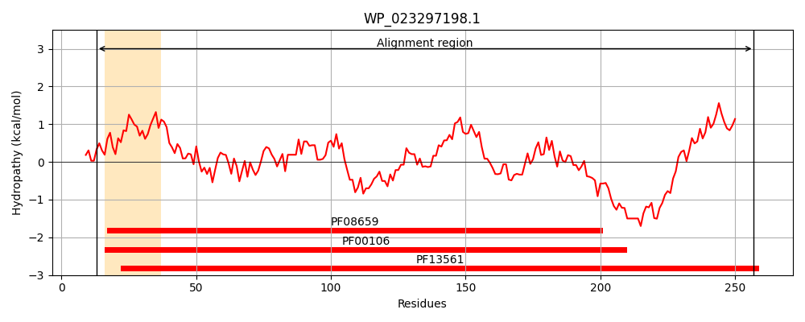
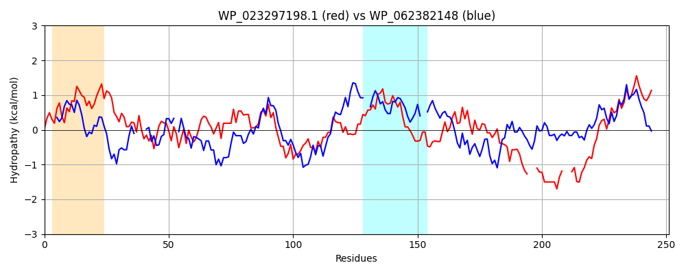

Hit Accession: WP_062382148
Hit TCID: 1.A.115.1.5
Hit Description: gnl|BL_ORD_ID|21287 gnl|TC-DB|WP_062382148.1|1.A.115.1.5 SDR family oxidoreductase [Pseudomonas abietaniphila]
Mach Len: 251
e:0.000000
Query TMS Count : 1
Hit TMS Count: 1
TMS-Overlap Score: 0.000000
Predicted Substrates:None
BLAST Alignment:
Score: 243 , Bit scores: 98 bits, E-value: 1.3e-24, Alignment length: 251, Percentage identity: 32
Query: 13 LQGRVAFVTGAGSGIGQTIACSLASAGARVVCFDLRDDGGLAETVSHIESIGGQACSYTGDVRQIADLRAAVALAKNRFGRLDIAVNAAGIANANPALEMESEQWQRVIDINLTGVWNSCKAEAELMLESGGGSIINIASMSGIIVNRGLDQAHYNCSKAGVIHLSKSLAMEWVGKGIRVNSISPGYTATPMNTR---PEMVHQTREFE---SQTPMQRMAKVEEMAGPALFLASDAASFCTGVDLVVDGG 257
L+G++A VTG +GIG A A GA V R AE + + +G A D + L A GRLD+ AG + P ++ Q+Q D N+ GV + + L+ + G S+I S +G Y SKA V +++ ++ + +RVN++SPG T TP P+ Q + SQ PM R+ + EE+A ALFLASD ASF G++L VDGG
Sbjct: 5 LEGKIALVTGGTTGIGLATAKRFAEEGAYVYITGRRQ----AELDAAVARVGN-ATGVQVDSTNLEQLDALYRQIGTEKGRLDVLFANAGGGSMLPLGDITEAQYQDTFDRNVKGVLFTVQKALPLLAK--GASVILTGSTAGSSGTAAFSV--YAASKAAVRAFARNWILDLKDRNVRVNTLSPGATRTPGLVDLAGPDAAQQQGLLDYLASQIPMGRVGEPEEIAAAALFLASDDASFVNGIELFVDGG 246 | Protein Hydropathy Plots: |
|---|
|  |  |
Pairwise Alignment-Hydropathy Plot:
|
|---|
|  |